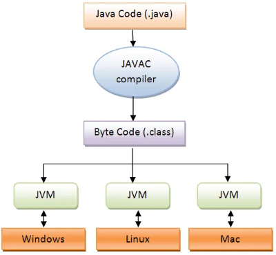

Java Programming Language
Java is a widely used programming language designed to be reliable, portable, and secure. It was created so that developers could write a program once and run it on many different types of computers without changing the code. This portability made Java especially popular for large applications and web-based systems.
History of Java
Java was originally developed in the 1990s by James Gosling along with his team at Sun Microsystems. The goal was to design a language that was more platform independent than C++ so it could be used for embedded devices such as televisions.
Key Features of Java
Platform Independence
Java programs are compiled into an intermediate form called bytecode. This bytecode runs on the Java Virtual Machine (JVM), which allows the same program to run on many different operating systems without modification.

Object-Oriented Design
Java is built around object-oriented programming principles such as classes, inheritance, and encapsulation. These concepts help developers organize large applications into reusable components and maintain complex systems more easily.
Automatic Memory Management
Java includes automatic garbage collection, which manages memory by removing objects that are no longer being used. This helps reduce certain programming errors and simplifies memory management compared with lower-level languages like C++.
Common Uses of Java
Java is widely used for enterprise applications, web services, and backend systems. It is also well known for its role in Android application development and large-scale business software.
Because of its reliability and portability, Java remains one of the most important programming languages used in modern software development.
Sources: